Home / Past papers / MLP End Term / this paper
IIT M FOUNDATION DIPLOMA FN EXAM - 01 Sep 2024
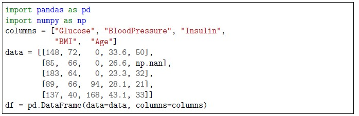
Consider following common data and answer the subquestions: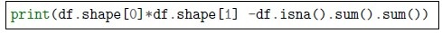
What will be the output of the following code snippet? Enter -1, if you think the above code snippet will generate an error.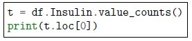
What will be the output of the following code snippet? Enter -1, if you think the above code snippet will generate an error.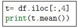
What will be the output of the following code snippet? Enter -1, if you think the above code snippet will generate an error.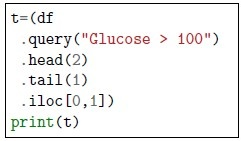
What will be the output of the following code snippet? Enter -1, if you think the above code snippet will generate an error. Consider following parameter grid for regression with RandomForest: How many unique combinations of hyperparameters are there in the above parameter grid?
Consider following parameter grid for regression with RandomForest: How many unique combinations of hyperparameters are there in the above parameter grid?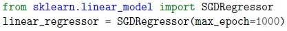
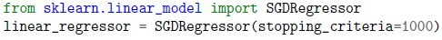
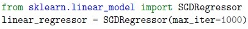
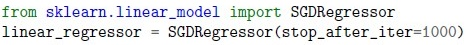
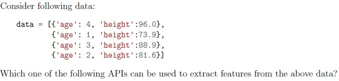
- DictVectorizer
- HashingVectorizer
- FeatureHasher
- Blood type (A, B, AB, O)
- Satisfaction rating (Very Unsatisfied, Unsatisfied, Neutral, Satisfied, VerySatisfied)
- Height of individuals
- Gender
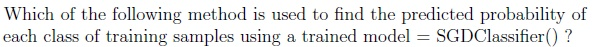
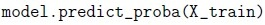
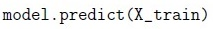
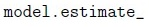
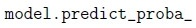
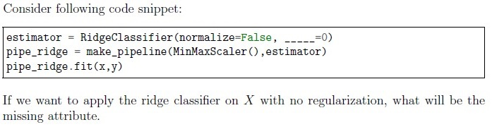
- cv
- reg_rate
- alpha
- tol
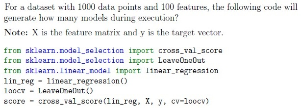
- 1000
- 100
- 99
- 999
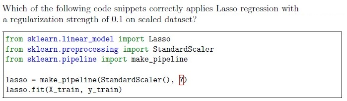
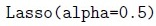
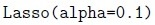
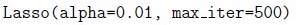
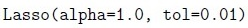
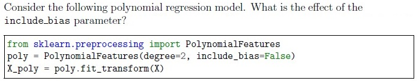
- It determines whether to include a bias term in the model.
- It sets the degree of the polynomial features.
- It controls the regularization strength.
- It specifies the number of features to consider when fitting the model.
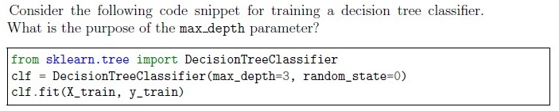
- To specify the maximum number of samples per leaf.
- To limit the depth of the tree.
- To set the minimum number of samples required to split an internal node.
- To control the minimum impurity decrease required for a split.

- It determines the function to measure the quality of a split.
- It specifies the number of features to consider when looking for the best split.
- It sets the strategy used to choose the split at each node.
- It controls whether to use the Gini impurity or entropy.
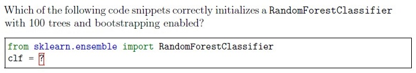
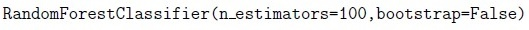
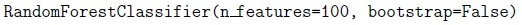
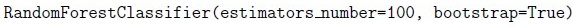
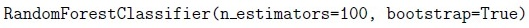
- Statement1 is True, Statement2 is True
- Statement1 is True, Statement2 is False
- Statement1 is False, Statement2 is True
- Statement1 is False, Statement2 is False
- It ignores outliers during the clustering process.
- It assigns outliers to the nearest cluster.
- It creates separate clusters for outliers.
- It removes outliers from the dataset before clustering.
- A hierarchical clustering technique that starts with each data point as itscluster and merges the closest clusters iteratively.
- A method for partitioning data into a predefined number of clusters.
- A clustering algorithm that uses centroids to iteratively assign data points toclusters.
- A dimensionality reduction technique that projects data onto a lower-dimensional space.

- The distance between cluster centroids
- The number of clusters formed
- The within-cluster sum of squared distances
- The silhouette coefficient
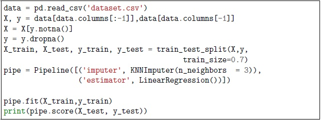
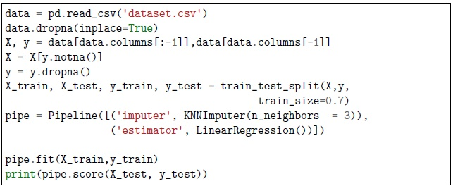
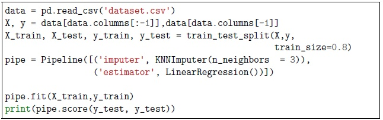
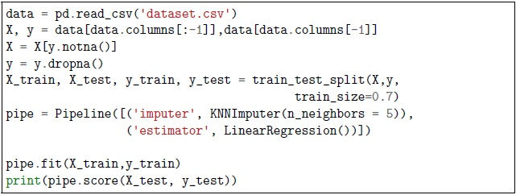
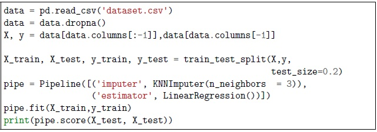
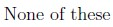
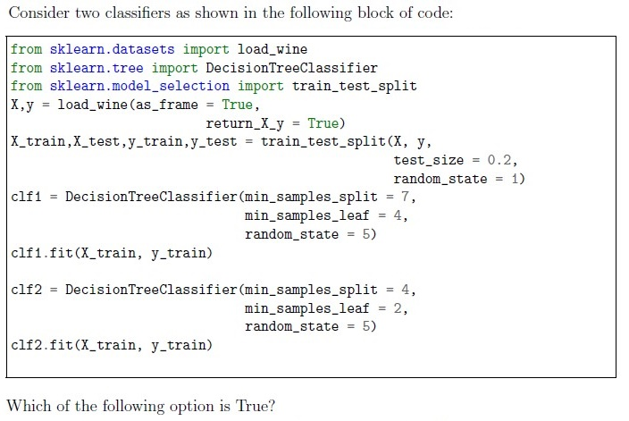
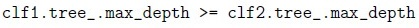
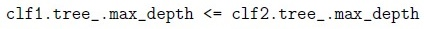
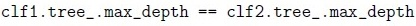
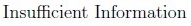
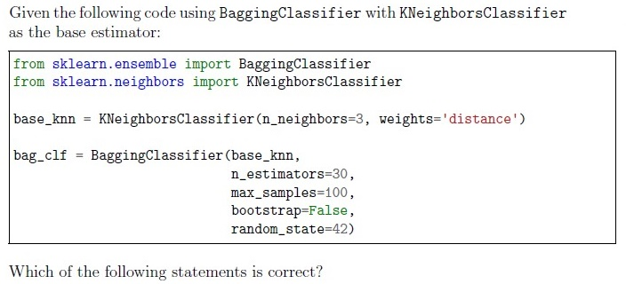
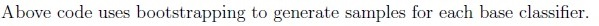
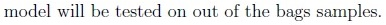
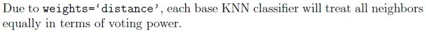
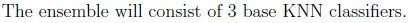
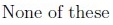
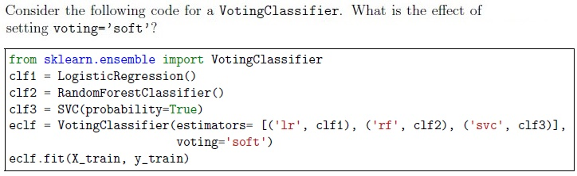
- The predictions are based on the majority vote.
- The predictions are based on the average of probabilities predicted by eachclassifier.
- The predictions are based on the weighted sum of the predictions.
- The predictions are based on the classifier with the highest accuracy
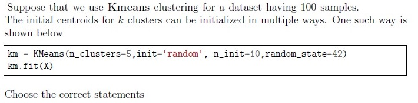
- 5 centroids are randomly initialized 10 times
- 10 centroids are randomly initialized 5 times
- 5 samples in the dataset are selected as initialization point such that they areat least 10 units away from each other
- 10 samples in the dataset are selected as initialization point such that they areat least 5 units away from each other
- Leads to biased estimation on test sets
- Increases the risk of false positives
- Leads to better estimation on training sets
- Reduces the risk of false positives
- LinearRegression
- DecisionTree
- SVM
- NaiveBayes

- The logistic regression model will use equal weights for both the classes in animbalanced dataset.
- The model does not use any regularization because the parameter C is set.
- The “balanced” mode uses the values of y to automatically adjust weightsinversely proportional to class frequencies in the input data.
- The value of C indicates that the model will apply a regularization.
- KNeighborsClassifier with high values of n_neighbors produces complexdecision boundaries.
- KNeighborsClassifier with high values of n_neighbors produces smoothdecision boundaries.
- In KNeighborsClassifier the scale of the features(columns) can impact thedecision boundaries.
- None of these
- Support vectors are the data points nearest to the hyperplane
- Using these support vectors, we maximize the margin of the classifier.
- Using these support vectors, we minimize the margin of the classifier.
- None of these
- It only finds spherical clusters.
- The output of the algorithms depends upon initial cluster centroids.
- It can automatically detect most appropriate value of k.
- None of these.
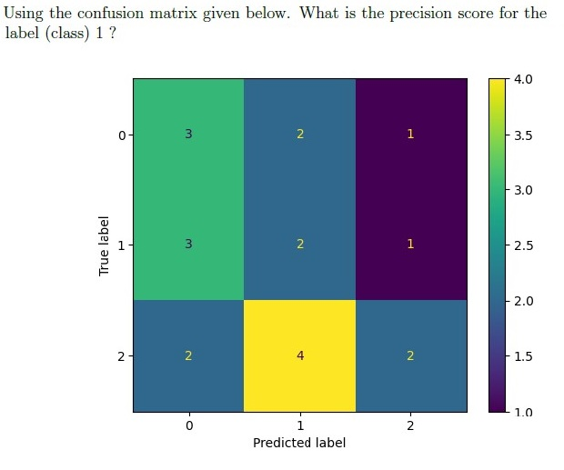
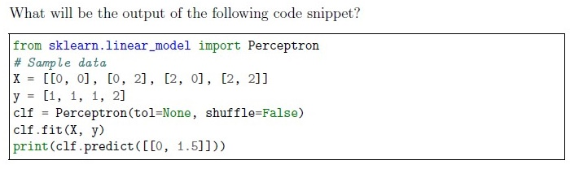
Answer key
- Q1 (SA, 2 marks): 24
- Q2 (SA, 2 marks): 3
- Q3 (SA, 2 marks): 34
- Q4 (SA, 2 marks): 2
- Q5 (SA, 2 marks): 64
- Q6 (SA, 2 marks): 21
- Q7 (MCQ, 1 marks): C
- Q8 (MCQ, 2 marks): A
- Q9 (MCQ, 2 marks): B
- Q10 (MCQ, 2 marks): A
- Q11 (MCQ, 2 marks): C
- Q12 (MCQ, 3 marks): A
- Q13 (MCQ, 3 marks): B
- Q14 (MCQ, 3 marks): A
- Q15 (MCQ, 3 marks): B
- Q16 (MCQ, 3 marks): A
- Q17 (MCQ, 3 marks): D
- Q18 (MCQ, 3 marks): B
- Q19 (MCQ, 3 marks): B
- Q20 (MCQ, 3 marks): A
- Q21 (MCQ, 3 marks): C
- Q22 (MCQ, 4 marks): A
- Q23 (MCQ, 4 marks): B
- Q24 (MCQ, 4 marks): E
- Q25 (MCQ, 4 marks): B
- Q26 (MCQ, 4 marks): A
- Q27 (MSQ, 2 marks): A, B
- Q28 (MSQ, 2 marks): A, C
- Q29 (MSQ, 3 marks): C, D
- Q30 (MSQ, 3 marks): B, C
- Q31 (MSQ, 3 marks): A, B
- Q32 (MSQ, 3 marks): A, B
- Q33 (SA, 3 marks): 0.25
- Q34 (SA, 3 marks): 1
- Q35 (SA, 3 marks): 3
- Q36 (SA, 2 marks): 1
- Q37 (SA, 2 marks): 0.64 to 0.66
Concepts this paper tests
Auto-generated summary from the source site. Handy as a checklist; the lessons above explain each idea from scratch.
Here’s a structured summary of core topics, concepts, principles, and equations essential for the Diploma Level: Machine Learning Practice (Computer-Based Exam). The exam covers Pandas, Scikit-Learn, ML algorithms, hyperparameter tuning, evaluation metrics, and clustering. Key areas are grouped into theoretical concepts, practical coding skills, and mathematical foundations (where applicable).
1. Core Topics & Concepts
A. Data Handling with Pandas
DataFrame Operations:
df.shape,df.isna().sum(),df.dropna(),df.fillna().df.iloc[](integer-location based indexing),df.loc[](label-based indexing).df.value_counts()for categorical data.- Handling missing values (
np.nan).
Key Equations:
- Non-missing values in DataFrame:
- Mean of a column (ignoring
NaN):
B. Machine Learning Algorithms
1. Supervised Learning
Linear Models:
- Linear Regression: Predicts continuous output. Uses OLS (Ordinary Least Squares).
- Ridge Regression (L2 Regularization):
alpha=0: No regularization.- Lasso Regression (L1 Regularization):
SGDRegressor: Stochastic Gradient Descent for linear models.
max_iter: Number of epochs (default: 1000).- Logistic Regression:
- Predicts probabilities for classification.
class_weight='balanced': Adjusts weights inversely proportional to class frequencies.C: Inverse of regularization strength (smallerC= stronger regularization).Predict probabilities:
predict_proba(X).- Support Vector Machines (SVM):
- Support Vectors: Data points closest to the hyperplane.
- Margin Maximization: Maximize distance between hyperplane and support vectors.
Kernel Trick: For non-linear decision boundaries.
- Decision Trees:
Parameters:
max_depth: Limits tree depth to prevent overfitting.min_samples_split: Minimum samples required to split a node.min_samples_leaf: Minimum samples required at a leaf node.criterion:'gini'(Gini impurity) or'entropy'(information gain).
Overfitting Risk: Deeper trees capture noise; shallower trees generalize better.
- Random Forest:
- Ensemble of Decision Trees.
- Bootstrapping: Samples with replacement (
bootstrap=True). - Feature Subsampling:
max_featurescontrols randomness. Out-of-Bag (OOB) Error: Error estimated on unseen samples.
- K-Nearest Neighbors (KNN):
- Lazy Learner: No training; memorizes data.
- Distance Metric: Euclidean, Manhattan, etc.
n_neighbors:- High
n_neighbors: Smoother decision boundaries. - Low
n_neighbors: Complex boundaries (risk of overfitting).
- High
Feature Scaling: Critical (distance-based).
- Perceptron:
- Linear classifier for binary classification.
- Decision Rule:
2. Unsupervised Learning
K-Means Clustering:
- Objective: Minimize within-cluster sum of squares (inertia).
- Inertia:
- Initialization:
'random'or'k-means++'. Limitations:
- Assumes spherical clusters.
- Sensitive to initial centroids.
- Agglomerative Clustering:
- Hierarchical: Starts with each point as a cluster; merges closest clusters.
- Handles Outliers: Assigns outliers to the nearest cluster.
3. Ensemble Methods
Bagging (Bootstrap Aggregating):
- Trains multiple models on bootstrapped samples.
- Reduces Variance (e.g., Random Forest).
Boosting:
- Sequentially trains models, focusing on errors from previous models.
- Examples: AdaBoost, Gradient Boosting.
Voting Classifier:
- Hard Voting: Majority class label.
- Soft Voting: Average of predicted probabilities.
C. Model Evaluation
Metrics:
Classification:
- Accuracy:
- Precision:
- Recall (Sensitivity):
- F1-Score: Harmonic mean of precision and recall.
- Confusion Matrix: TP, TN, FP, FN.
Regression:
- R² Score:
- MSE (Mean Squared Error):
Cross-Validation:
- k-Fold CV: Splits data into
kfolds; trains onk-1folds, tests on 1. - Leave-One-Out CV (LOOCV):
nmodels fornsamples.
- k-Fold CV: Splits data into
Dummy Classifier:
- Baseline model (e.g.,
strategy='most_frequent').
- Baseline model (e.g.,
D. Preprocessing
Feature Scaling:
- StandardScaler: (mean=0, std=1).
- MinMaxScaler: (range [0, 1]).
- Impacted Algorithms: KNN, SVM, Linear Regression, Neural Networks.
Handling Missing Data:
- Imputation:
KNNImputer,SimpleImputer. - Dropping:
df.dropna().
- Imputation:
Feature Extraction:
- DictVectorizer: Converts dictionaries to feature matrices.
PolynomialFeatures: Generates polynomial/combination features.
include_bias: Adds intercept term.
E. Hyperparameter Tuning
Grid Search:
- Exhaustive search over specified parameter values.
Example:
param_grid = {'n_estimators': [10, 20, 30], 'max_features': [2, 3, 4]}- Total Combinations: Product of parameter options (e.g.,
3 * 3 = 9).
- Random Search: Randomly samples hyperparameters.
F. Bias-Variance Tradeoff
- Bias: Error due to overly simplistic assumptions (underfitting).
- Variance: Error due to excessive complexity (overfitting).
- Regularization: Controls model complexity (e.g.,
alphain Ridge/Lasso).
G. Data Leakage & Best Practices
- Data Snooping: Peeking at test data leads to biased estimates.
- Train-Test Split:
train_test_split(test_size=0.3, random_state=42). - Pipelines: Ensure preprocessing is fitted only on training data.
2. Key Equations
| Concept | Equation |
|---|---|
| Linear Regression | |
| Ridge Regression | |
| Lasso Regression | |
| Logistic Regression | |
| Precision | |
| Recall | |
| F1-Score | |
| R² Score | |
| Inertia (K-Means) | |
| Gini Impurity | |
| Entropy | |
| Euclidean Distance |
Graph 2: Unsupervised Learning
Graph 3: Model Evaluation
Graph 4: Preprocessing & Feature Engineering
Graph 5: Ensemble Methods
Graph 6: Hyperparameter Tuning
4. Exam Tips
Pandas:
- Know how to count non-missing values (
df.shape[0]*df.shape[1] - df.isna().sum().sum()). - Use
value_counts()for categorical data.
- Know how to count non-missing values (
Scikit-Learn:
- Syntax:
model.fit(X_train, y_train),model.predict(X_test). - Pipelines: Ensure preprocessing is only fitted on training data.
- Syntax:
Algorithms:
- Decision Trees:
max_depthcontrols overfitting. - Random Forest:
n_estimators= number of trees. - KNN: Scale features;
n_neighborsaffects boundaries.
- Decision Trees:
Evaluation:
- Precision/Recall Tradeoff: High precision = fewer FP; high recall = fewer FN.
- Cross-Validation: LOOCV generates
nmodels fornsamples.
Clustering:
- K-Means: Inertia measures compactness.
- Agglomerative: Assigns outliers to nearest clusters.
Hyperparameters:
- Ridge/Lasso:
alphacontrols regularization strength. - SGD:
max_iter= epochs.
- Ridge/Lasso: